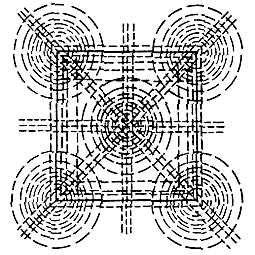

Многие авторы, затрагивая тему композиции в дизайне и искусстве, сравнивают лист с магнитным полем, а взаимодействие элементов на плоскости — с взаимодействием заряженных частиц.
Фаворский пишет:
Плоскость должна быть ограниченной, иначе она, может быть, не будет ровной. Тут можно привлечь в качестве аналогии силовое магнитное поле. Совсем иначе мы смотрим середину плоскости и края ее. Край плоскости образует, хотим мы этого или не хотим, обрамление, а центре — глубина — пространство. И вся плоскость должна быть построена напряженно-ритмически.
Ближе всех к «магнитной» теме подбирается Арнхейм в книге «Искусство и визуальное восприятие», глава «Равновесие»:
Центр [квадратного формата] — это часть сложной скрытой структуры, которую можно изучить с помощью диска (в той же степени, в какой металлические опилки повторяют силовые линии магнитного поля). Если диск поочередно располагать в различных местах квадрата, то можно обнаружить, что в одних случаях он выглядит более устойчивым, в других же он проявляет признаки натяжения в определенном направлении. Иногда его состояние может оказаться неопределенным и колеблющимся.
На основе рассуждений Арнхейм строит так называемый «структурный план» и изображает на нем силовые точки и линии формата:

Где бы ни был расположен диск, он подвергается действию сил со стороны всех скрытых структурных факторов… В центре все силы находятся в состоянии равновесия, и, следовательно, центральное расположение способствует наиболее спокойному состоянию. Другое сравнительно спокойное состояние можно найти, например перемещая диск по диагонали. По-видимому, точка равновесия лежит где-то вблизи угла квадрата, а не вблизи его центра. Это означает, что, несмотря на то, что центральная точка сильнее угловой, данное преимущество компенсируется большим расстоянием наподобие магнитов разной силы.
К сожалению, в найденных источниках сравнение композиционных сил с магнитными не выходит за рамки ощущений и остается всего лишь догадкой (или красивой метафорой). Мы решили проверить эту догадку на практике и создать симулятор, который воспроизводил бы действие магнитного поля на плоскости листа.
В основе симулятора — закон электромагнитного взаимодействия Кулона. В применении к композиции его можно описать так: «Элементы на плоскости отталкиваются друг от друга с силой, пропорциональной их (визуальной) массе и обратно пропорциональной квадрату расстояния между ними».
Формат — самый крупный объект на листе, поэтому рамка формата также заряжена. Все элементы находятся внутри силового поля рамки.